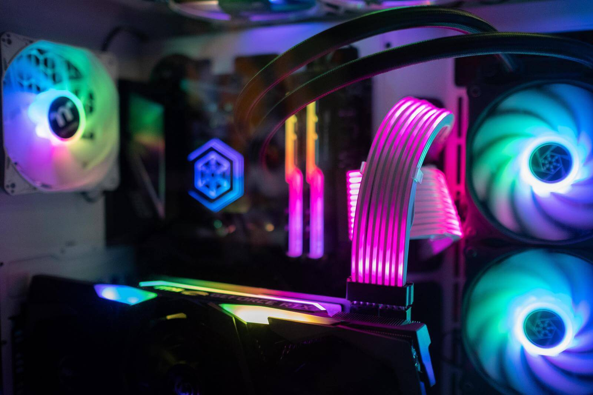
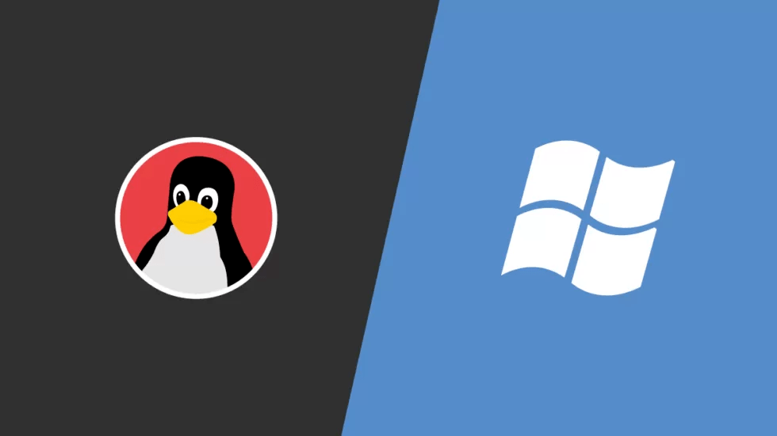

EN SAVOIR PLUS SUR LES ORDINATEURS
Vous souhaiter en apprendre plus sur l'informatique ? Ce site est fait pour vous. Avec plusieurs page rédigées avec mes connaissances, je vous souhaite une bonne visite !
LES COMPOSANTS DE L'ORDINATEUR
Vous vous intéresser à la partie hardware d'un PC, cette page est faite pour vous.
MONTER VOTRE MACHINE
Vous souhaitez monter vous-même votre machine ?
TÉLÉCHARGER VOTRE OS
Vous souhaitez monter vous-même votre machine ?
Linux Windows 